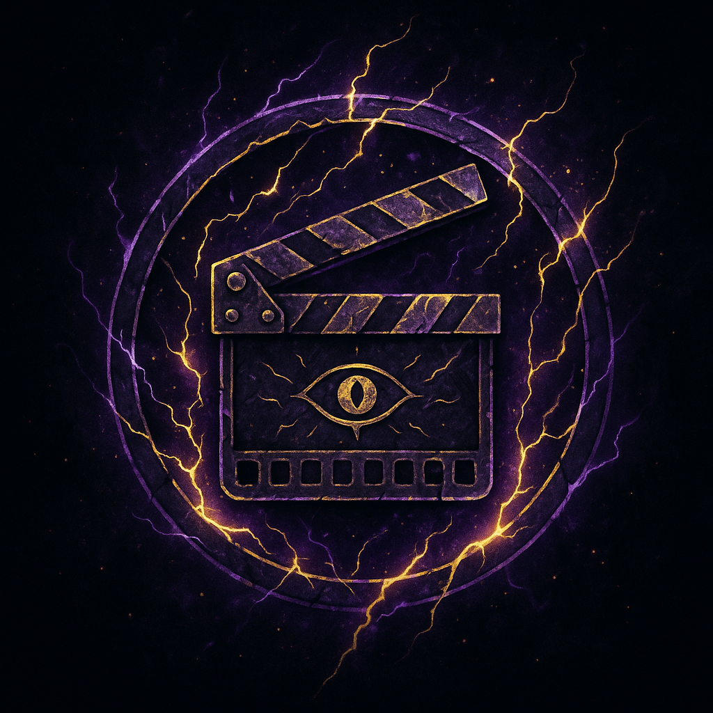
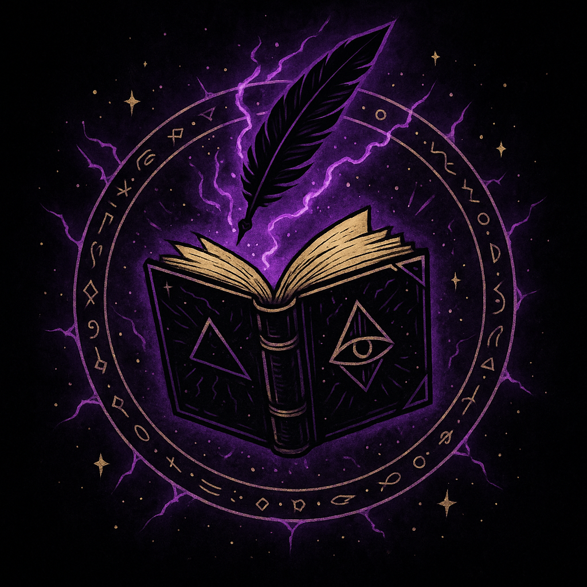
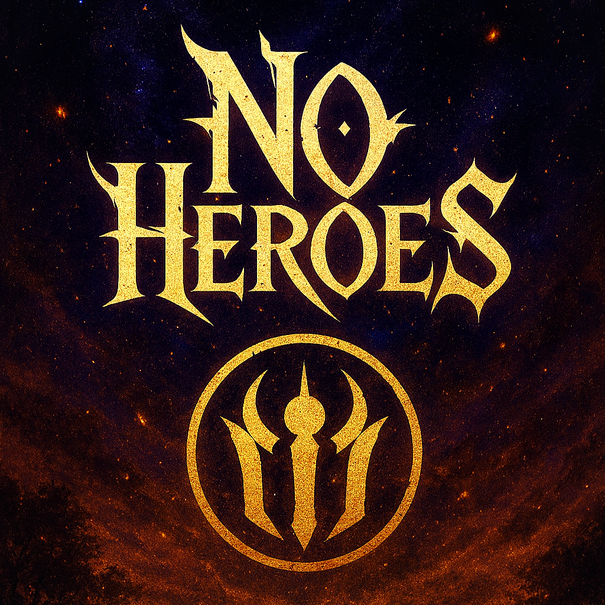
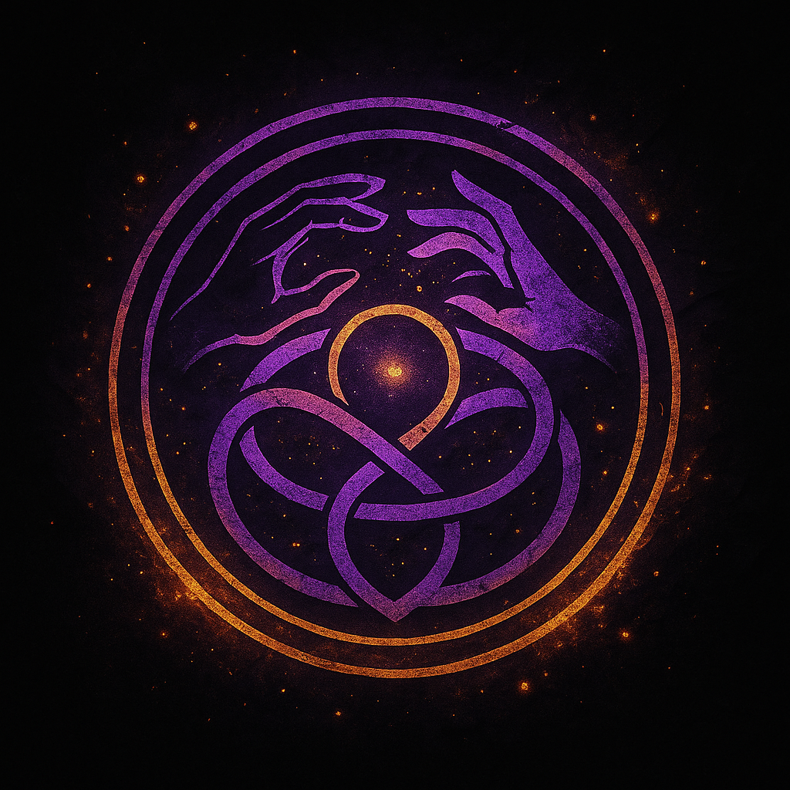
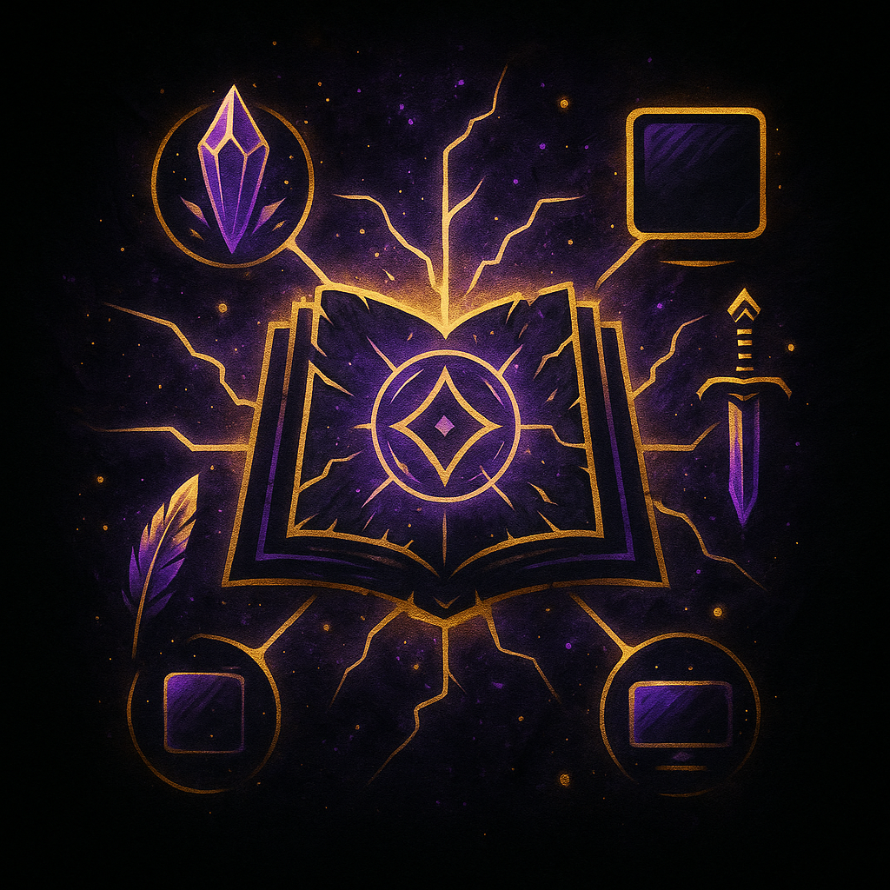
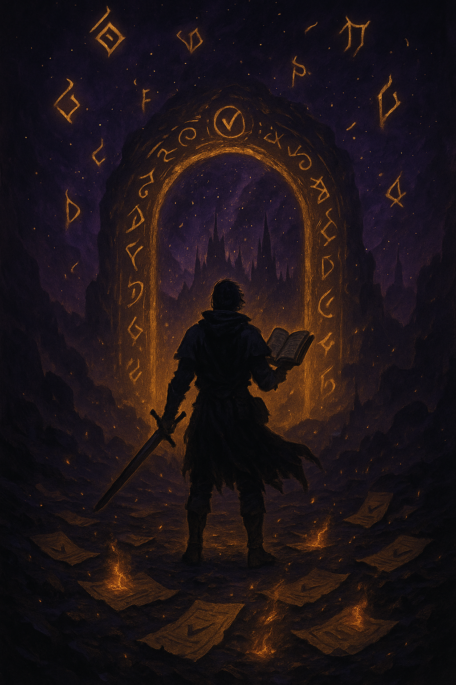
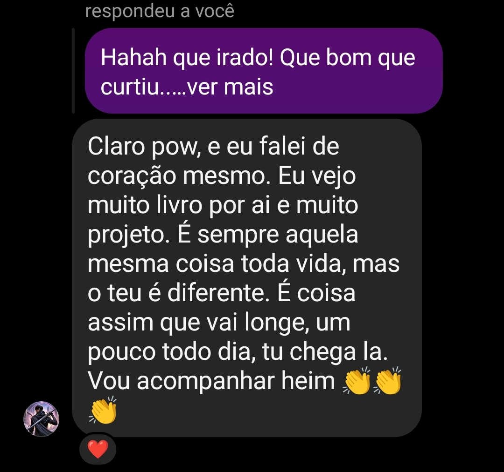
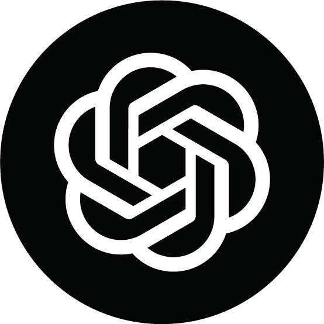

O que é NoHeroes?
Muito mais que uma marca: um portal vivo.
Uma plataforma multimídia de impacto — onde histórias, conhecimento e transformação se entrelaçam. Aqui, você não é apenas um Espectador. Você evolui.
“Você lê, assiste e interage. Aprende. Cresce. E com o tempo… Você também Cria."
Sistema Vivo Digital
- Integração de todas as modalidades da vida.
- A vida como sistema interligado e entrelaçado.
- Combate à desordem causada por isolar o que está conectado.
- Criatividade, aprendizado e evolução unidos.
Tudo o que criamos — de mangás a ferramentas — te impulsiona para fora da inércia. Aqui a Ascenção é real.
✨ Muito além de uma história
Ecossistema interconectado, onde criamos, contamos histórias e te ajudamos a evoluir de verdade.

Estúdio de Animação
Produção completa de animes e clipes com estética refinada, identidade autoral e conexão com o universo NoHeroes.
Experiência sensorial em áudio e imagem — atmosfera única.

Editora Alternativa
Parceiria direta com editoras. Livros e eBooks com identidade forte onde lazer e educação se fundem com filosofia e intospecção.
Textos que ensinam e transformam enquanto entretêm.

App Gamificado
XP, metas, modos e rituais - ajudando você a transformar sua vida real em uma jornada imersiva e significativa.- Todo Universo NoHeroes interage com o sistema.

Rede de Criadores
Conexão entre tutores e aprendizes, permitindo ensinar, criar, crescer e construir novos mundos juntos.

Narrativa Multiplataforma
ROAR, Chrysalis, Echoes, FREQ — histórias que se entrelaçam e expandem o universo NoHeroes.

RPG Online Open World
Um mundo aberto medieval estilo anime inspirado em D&D e GTA, Com a narrativa do universo de NoHeroes — liberdade total, jogabilidade avançada e planos para imersão estilo Sword Art Online.
Como funciona?
Cada leitura, ação e conquista no NoHeroes conecta sua evolução no universo, na plataforma e na vida real — tudo faz parte do mesmo ecossistema vivo.
Conteúdo vivo
Mangás, livros e animes que desbloqueiam aprendizado e XP real.
Missões reais
Desafios aplicáveis à vida real, com progresso rastreável no app.
Ecossistema integrado
Tudo o que você faz alimenta sua jornada no app, portal e comunidade.
MVV
Missão
Mostrar que viver não é trabalhar. A vida é feita para ser sentida e vivida de forma plural e criativa. NoHeroes ajuda cada pessoa a explorar seu potencial completo — sem fórmulas prontas, sem pressões, sem a ilusão de que sucesso é se tornar máquina.
Visão
Trazer mundos da imaginação para o mundo real. Tornar sonhos e ideias em experiências concretas. Ser um universo vivo onde arte, fantasia e evolução pessoal se encontram para inspirar, ensinar e transformar.
Valores
Seguimos a Cristo e cultivamos valores cristãos como bondade, verdade e serviço. Mesmo com estéticas sombrias, nossa mensagem é sempre clara: ensinar o bem e lembrar que até no escuro existe luz para quem busca propósito real.
Para quem é a NoHeroes?
Para quem carrega mundos dentro de si, mas nunca foi compreendido.
Para quem rejeita as fórmulas prontas e busca caminhos novos.
Só isso?
Não… É também para quem deseja criar mas ainda não encontrou as ferramentas certas.
Para quem quer se libertar, mas precisa de impulso e sentido.
Mas não é só isso… É para quem quer viver, não só existir.
Vozes que Ecoam
Algumas mensagens não precisam ser editadas — só sentidas.

"A experiência NoHeroes mudou completamente minha perspectiva sobre arte e narrativa. Um universo vivo, visceral e inesquecível."
Linha do Tempo "Até Aqui"
Por trás das Sombras...
“...há um criador. Raul. Um escritor, artista digital e pai — que transforma angústias em arte e fantasia em realidade.”

Equipe & Colaboradores
O universo NoHeroes é construído com ajuda coletiva. Toda jornada merece aliados.
Raul Takagi S. Souza
Criador, roteirista, artista digital & desenvolvedor

ChatGPT
Assistente de criação & co-pesquisa
Outros Colaboradores
Editoras, artistas, aliados e parceiros da expansão do projeto
Para a Imprensa e Parceiros
Este espaço reúne os materiais oficiais do projeto NoHeroes destinados à imprensa, colaboradores e parceiros. Aqui você encontra documentos institucionais, apresentações estratégicas e ativos visuais para divulgação, análise ou colaboração profissional.
Press & Media Kit — NoHeroes
- Press Kit (PDF): material institucional voltado à imprensa, com apresentação oficial do projeto, contexto criativo, visão geral do universo e informações para divulgação editorial.
- Media Kit (PDF): material direcionado a colaboradores e parceiros. Alem de diretrizes de uso visual da marca NoHeroes.
- Pacote Completo (ZIP): inclui todos os arquivos organizados, a pasta de assets para uso profissional e o pitch oficial do projeto para apresentações e propostas.
- GitHub: acesso direto ao repositório oficial para download manual de arquivos, versões atualizadas e organização técnica dos materiais.